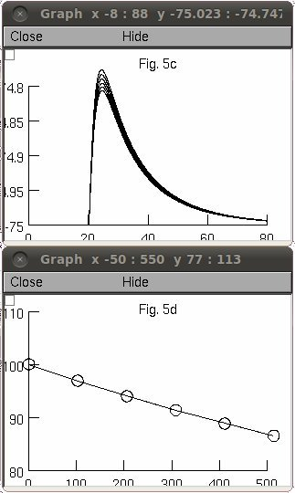

This is the readme for the model for the paper Palmer LM, Stuart GJ (2009) Membrane potential changes in dendritic spines during action potentials and synaptic input. J Neurosci 29:6897-903 The authors supplied the cell and spine morphologies and code to create Fig 5B. The ModelDB administrator added scripts to recreate additional figures from the paper. To run the simulation: Auto-launch from modeldb or download and extract the archive and then under unix/linux ---------- cd to the newly extracted folder and type nrnivmodl to compile the mod file then type nrngui mosinit.hoc to start the simulation. mswin ----- run mknrndll and traverse to the newly extracted folder to make the dll. Double click on the mosinit.hoc file in windows explorer Mac OS X -------- Drag and drop the folder onto the mknrndll icon to compile the mod file and then drag the "run" hoc file onto the NEURON icon. Once the simulation has started you can select from the buttons which simulation you would like to run: If you click on the Fig 5B button you should see: Clicking the "Fig 5C, D" button, after a few seconds, will display:  The supplementary figure 2c button, "Suppl. Fig. 2c", will run to completion in a few seconds generating: